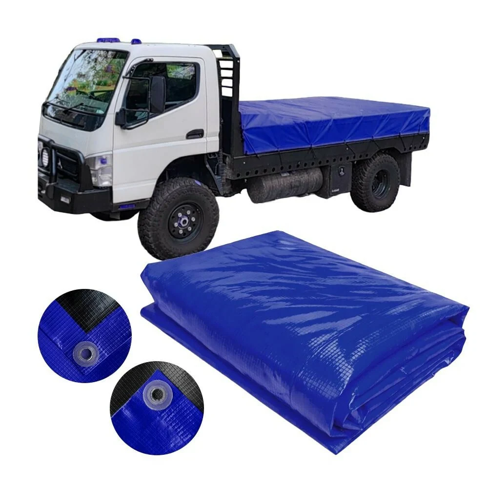

Conectamos empresas con mercados internacionales.
Representación comercial, desarrollo de negocios, sourcing y soluciones de importación y exportación.
Sectores de Actividad
Ver todos los sectores →
Snacks, Galletas y Marca Propia

Envases Plásticos

Películas y Envases

Transporte y Logística

Sombreo y protección

Ocio y piscinas
Los fabricantes y las condiciones comerciales se confirman durante la negociación.
Su socio en
negocios internacionales.
Identificamos oportunidades, conectamos empresas y desarrollamos soluciones comerciales a medida.
Contáctenos →